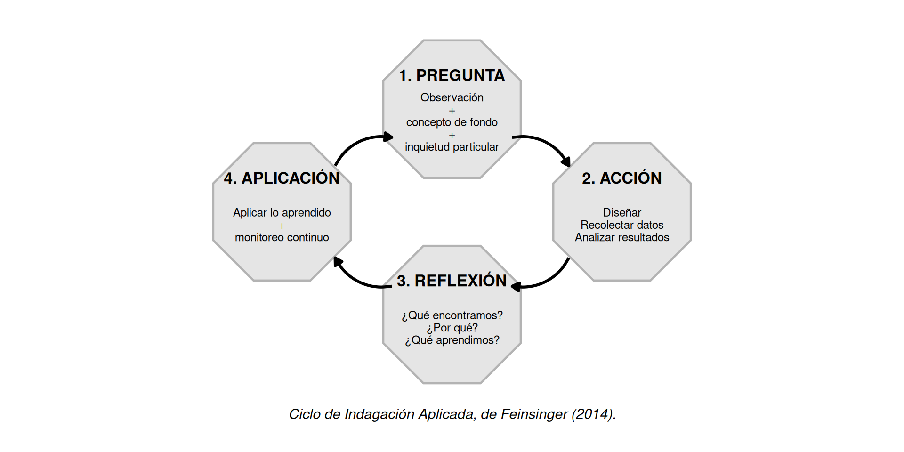
Estadística descriptiva
Preguntas, datos, resumen y descripción
Andrés Tálamo
31 de agosto de 2026
Bienvenidas y bienvenidos
¿Qué significa que estén estudiando en la Facultad de Ciencias Naturales?
Se están formando, entre otras cosas, para hacer ciencia:
investigar, producir evidencia y tomar decisiones fundamentadas.
Investigar comienza con una pregunta
Investigar no es ni más ni menos que:
- plantearnos una pregunta;
- diseñar un estudio que produzca datos adecuados;
- usar esos datos para intentar responderla.
- concluir y aplicar
El método hipotético-deductivo
Teoría o paradigma
↔
Observaciones
→
Hipótesis científica
→
Predicción
↓
Diseño conceptual
ámbito · escala · factores · variables
ámbito · escala · factores · variables
←
Hipótesis estadísticas
←
Diseño cuantitativo
←
Toma de datos
↓
Análisis
→
¿Se apoya la predicción?
→
Revisar hipótesis
→
Revisar teoría
En la práctica, investigar no siempre sigue una línea recta: revisamos ideas y volvemos a preguntar.
En muchas áreas de la ciencia, no seguimos a rajatabla este método, y tampoco el foco de interés en nuestras investigaciones es la teoría, sino más bien la aplicación al terreno.
El método científico, contado con memes

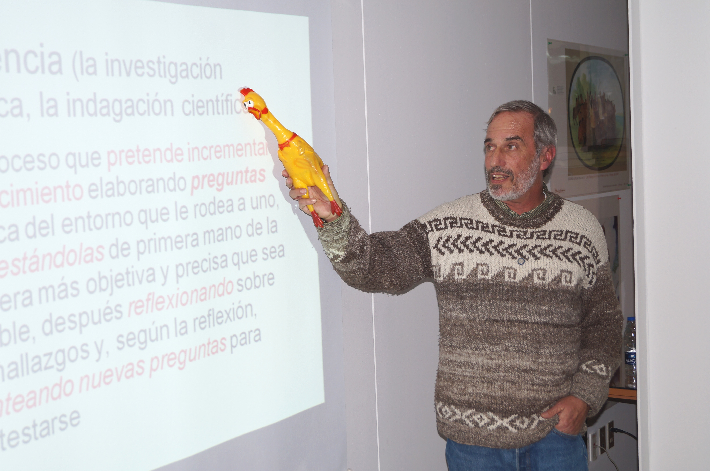
1. Pregunta
↘
2. Acción
↙
3. Reflexión
↖
4. Aplicación
↗
La acción incluye decidir cómo obtener datos capaces de responder la pregunta.
Propuesta por Peter Feinsiger y colaboradores.
Apliquemos esta lógica a una pregunta agronómica
¿Qué variedad de maíz me conviene sembrar en mi campo?
¿Cómo intentarían responderla?
Un primer intento
PARCELA 1
A
6,4 t/ha
PARCELA 2
B
7,1 t/ha
¿Ya podemos recomendar B?
¿Las parcelas son exactamente iguales?
- suelo
- disponibilidad de agua
- pendiente
- malezas y plagas
- historia de manejo
La diferencia observada podría deberse a la variedad… o a otras diferencias entre parcelas.
Necesitamos más de una parcela
Varias observaciones nos permiten ver cómo cambian los resultados parcela a parcela.
¿Dónde colocarían A y B dentro del campo? Punto muy importante, que veremos más adelante…
Si el estudio fue mal planteado, nos costará separar el efecto de la variedad de las demás diferencias entre parcelas.
Los datos tienen una historia
PREGUNTA
↓
DISEÑO
↓
DATOS
↓
DESCRIPCIÓN
↓
INFERENCIA
↓
CONCLUSIÓN / DECISIÓN
Hoy nos detenemos aquí
De los datos a una descripción útil
Sin olvidar cómo fueron obtenidos.
Después del estudio, obtenemos una matriz
| parcela | variedad | rendimiento_t_ha | categoria_rendimiento | dano | numero_plantas | materia_organica |
|---|---|---|---|---|---|---|
| P01 | A | 6,5 | medio | medio | 70 | 2,9 |
| P02 | A | 6,1 | bajo | bajo | 71 | 2,6 |
| P03 | B | 5,4 | bajo | alto | 67 | 2,1 |
| P04 | B | 6,4 | medio | medio | 66 | 2,7 |
| P05 | A | 6,7 | medio | bajo | 76 | 3,3 |
| P06 | A | 6,4 | medio | medio | 66 | 2,6 |
| P07 | B | 6,2 | bajo | bajo | 67 | 2,5 |
| P08 | A | 6,3 | medio | medio | 73 | 3,5 |
Ocho de las 24 parcelas del estudio simulado.
Una observación, tres ideas
P04
B
Rendimiento: 6,4 t/ha
- Unidad estadística / caso: ¿sobre qué registramos información?
- Variable: ¿qué característica registramos en la unidad?
- Dato: ¿qué valor tomó esa variable en la unidad?
El valor no es la variable
| Variable | Categorías / valores | Dato en esta parcela |
|---|---|---|
| variedad | A / B | B |
| rendimiento | valores numéricos (t/ha) | 6,40 t/ha |
| daño | bajo / medio / alto | medio |
| categoría de rendimiento | bajo / medio / alto | alto |
La matriz organiza la observación
Las filas son parcelas · Las columnas son variables · Las celdas son datos
| Parcela ↓ | Variedad | Rendimiento (t/ha) | Daño |
|---|---|---|---|
| P01 | A | 6,5 | medio |
| P02 | A | 6,1 | bajo |
| P03 | B | 5,4 | alto |
Leemos una fila para conocer una parcela; leemos una columna para estudiar una variable.
No todas las variables son iguales
| CATEGÓRICAS | CUANTITATIVAS |
|---|---|
| Nominal variedad | Discreta número de plantas |
| Ordinal daño | Continua rendimiento · materia orgánica |
El tipo indica qué operaciones y representaciones tienen sentido.
Un número puede ser solo un nombre
Si las parcelas fueran 1, 2, 3, …
¿Tendría sentido calcular la el promedio de esos números?
No. Un identificador distingue casos; no mide una cantidad.
Dos preguntas distintas
¿Qué tipo de variable es?
Categórica o cuantitativa
¿Qué papel cumple?
Clasificación, variable de respuesta u otra información relevante
Volvamos a la pregunta
¿Qué variedad de maíz me conviene sembrar en mi campo?
Conviene significa…
- mayor rendimiento?
- mayor rentabilidad?
- mayor estabilidad?
- menor daño o enfermedad?
- mejor respuesta ante sequía?
La pregunta determina qué variable/s necesitamos medir.
Hagamos la pregunta medible
¿Cuál de las variedades A y B presenta mayor rendimiento bajo las condiciones de nuestro estudio?
Todavía no afirmaremos qué ocurrirá en general, más allá de nuestras pocas parcelas.
Tenemos datos. ¿Ya tenemos información?
Necesitamos organizarlos, visualizarlos y resumirlos
Tres herramientas complementarias
| TABLAS | GRÁFICOS | MEDIDAS DESCRIPTIVAS |
|---|---|---|
| organizar | visualizar | resumir |
La elección depende del tipo de variable y de la pregunta.
Primero, miremos la matriz
| parcela | variedad | rendimiento_t_ha | categoria_rendimiento | dano | numero_plantas | materia_organica |
|---|---|---|---|---|---|---|
| P01 | A | 6,5 | medio | medio | 70 | 2,9 |
| P02 | A | 6,1 | bajo | bajo | 71 | 2,6 |
| P03 | B | 5,4 | bajo | alto | 67 | 2,1 |
| P04 | B | 6,4 | medio | medio | 66 | 2,7 |
| P05 | A | 6,7 | medio | bajo | 76 | 3,3 |
| P06 | A | 6,4 | medio | medio | 66 | 2,6 |
¿Qué variable queremos mirar y qué pregunta queremos responder?
Descripción de una variable categórica (o cualitativa)
¿Cómo resumimos el nivel de daño?
| Daño | Conteo | Proporción | Porcentaje |
|---|---|---|---|
| bajo | 8 | 0,33 | 33 % |
| medio | 10 | 0,42 | 42 % |
| alto | 6 | 0,25 | 25 % |
| Total | 24 | 1,00 | 100 % |
En la jerga estadística: conteo = frecuencia absoluta · proporción = frecuencia relativa.
Las barras conservan el orden
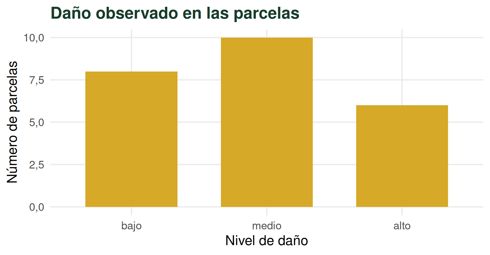
Relación entre 2 variables categóricas (o cualitativas)
¿El rendimiento categorizado cambia con el daño?
FILAS: nivel de daño · COLUMNAS: categoría de rendimiento
| Rend. bajo | Rend. medio | Rend. alto | Total | |
|---|---|---|---|---|
| daño_bajo | 3 | 3 | 2 | 8 |
| daño_medio | 5 | 5 | 0 | 10 |
| daño_alto | 4 | 2 | 0 | 6 |
| Total | 12 | 10 | 2 | 24 |
Primero: frecuencias absolutas. Cada celda contiene un número de parcelas.
Proporciones dentro de cada nivel de daño
Frecuencias relativas por fila: cada celda es una parte del total de su fila.
| Rend. bajo | Rend. medio | Rend. alto | Total | |
|---|---|---|---|---|
| daño_bajo | 0,375 | 0,375 | 0,25 | 1 |
| daño_medio | 0,500 | 0,500 | 0,00 | 1 |
| daño_alto | 0,667 | 0,333 | 0,00 | 1 |
El denominador es el total de parcelas de ese nivel de daño: cada fila suma 1.
También podrían calcularse frecuencias relativas por columnas o respecto del gran total. La elección depende de qué comparación queremos hacer.
Las mismas proporciones, expresadas como porcentajes
FILAS: nivel de daño · COLUMNAS: categoría de rendimiento
| Rend. bajo | Rend. medio | Rend. alto | Total | |
|---|---|---|---|---|
| daño_bajo | 37,5% | 37,5% | 25,0% | 100,0% |
| daño_medio | 50,0% | 50,0% | 0,0% | 100,0% |
| daño_alto | 66,7% | 33,3% | 0,0% | 100,0% |
El denominador es el total de parcelas de ese nivel de daño. Por eso, cada fila suma 100%.
Las proporciones también pueden verse como barras
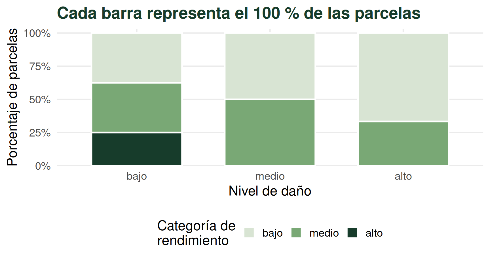
Dentro de cada nivel de daño, los segmentos representan las categorías de rendimiento y suman 100 %.
Descripción de 1 variable cuantitaitva
Rendimiento: muchos valores, difíciles de visualizar
6,5 | 6,1 | 5,4 | 6,4 | 6,7 | 6,4 | 6,2 | 6,3 | 6,6 | 6,9 | 6,0 | 5,3 | 5,6 | 5,7 | 6,4 | 5,7 | 8,0 | 5,7 | 7,6 | 6,6 | 6,2 | 6,7 | 4,9 | 5,5
¿Cómo se distribuyen los rendimientos? (por ahora, no distinguimos las variedades)
Ordenar deja ver mejor el recorrido
4,9 | 5,3 | 5,4 | 5,5 | 5,6 | 5,7 | 5,7 | 5,7 | 6,0 | 6,1 | 6,2 | 6,2 | 6,3 | 6,4 | 6,4 | 6,4 | 6,5 | 6,6 | 6,6 | 6,7 | 6,7 | 6,9 | 7,6 | 8,0
Podemos saber cuánto rindió la parcela con menor rendimiento, y también con mayor rendimiento…
Pero todavía cuesta ver dónde se acumulan o concentran la mayoría de los valores de rendimiento.
Agrupemos valores próximos
| Intervalo | Frecuencia |
|---|---|
| [4,5; 5,0) | 1 |
| [5,0; 5,5) | 2 |
| [5,5; 6,0) | 5 |
| [6,0; 6,5) | 8 |
| [6,5; 7,0) | 6 |
| [7,0; 7,5) | 0 |
| [7,5; 8,0) | 1 |
| [8,0; 8,5) | 1 |
Incluimos el límite izquierdo y excluimos el derecho. Por ejemplo, 5,5 entra en [5,5; 6,0).
Frecuencia por intervalo: un histograma
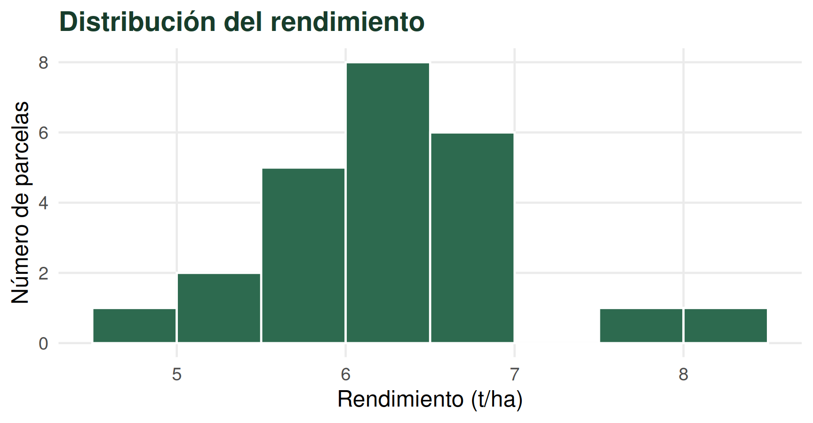
También podemos acumular las frecuencias
| Intervalo | Conteo (FA) | Proporción (FR) | Conteo acumulado (FAA) | Proporción acumulada (FRA) |
|---|---|---|---|---|
| [4,5; 5,0) | 1 | 0,04 | 1 | 0,04 |
| [5,0; 5,5) | 2 | 0,08 | 3 | 0,12 |
| [5,5; 6,0) | 5 | 0,21 | 8 | 0,33 |
| [6,0; 6,5) | 8 | 0,33 | 16 | 0,67 |
| [6,5; 7,0) | 6 | 0,25 | 22 | 0,92 |
| [7,0; 7,5) | 0 | 0,00 | 22 | 0,92 |
| [7,5; 8,0) | 1 | 0,04 | 23 | 0,96 |
| [8,0; 8,5) | 1 | 0,04 | 24 | 1,00 |
Acumular = ir sumando hasta ese intervalo.
Hasta [5,5; 6,0): 1 + 2 + 5 = 8 parcelas → 8/24 = 0,33
Por lo tanto, el 33% de las parcelas tuvo un rendimiento menor que 6,0 t/ha.
FA = frecuencia absoluta · FR = frecuencia relativa · FAA = frecuencia absoluta acumulada · FRA = frecuencia relativa acumulada
Una distribución cuenta una historia
Permite mirar:
- tendencia central
- dispersión
- forma
- valores inusuales
Ojo: Barras e histograma no son lo mismo
| Gráfico de barras | Histograma |
|---|---|
| Categorías separadas | Intervalos contiguos |
| El eje identifica categorías | El eje representa una cantidad |
| Puede respetar un orden conceptual | Conserva el orden numérico |
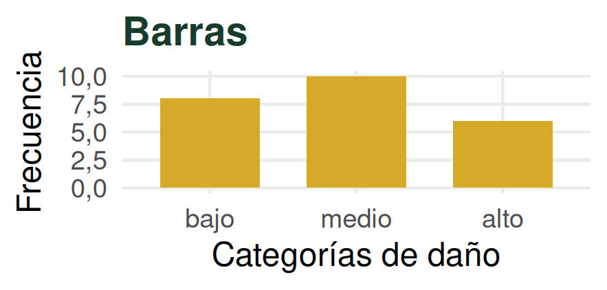
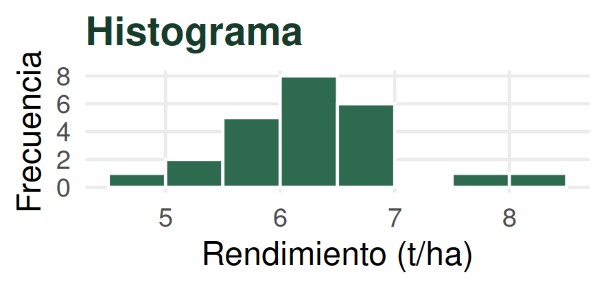
Una variable cuantitativa vs. otra categórica
¿Cómo se distribuye el rendimiento por variedad?
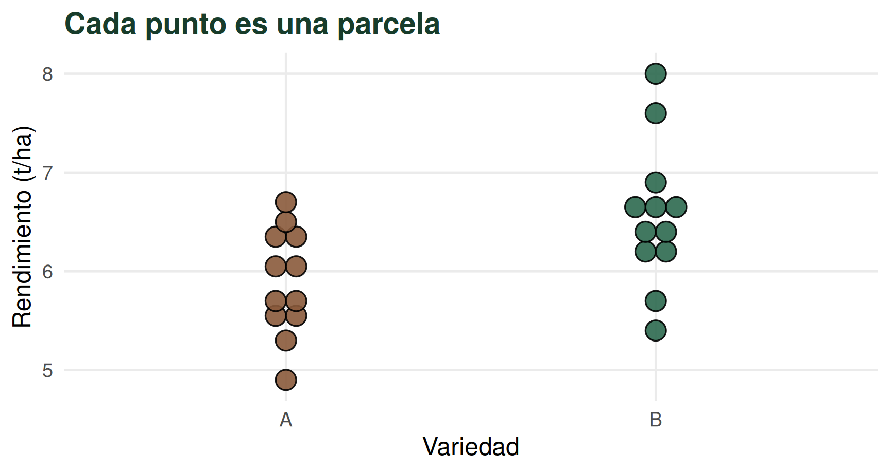
Gráfico de cajas (boxplot): los mismos datos, resumidos
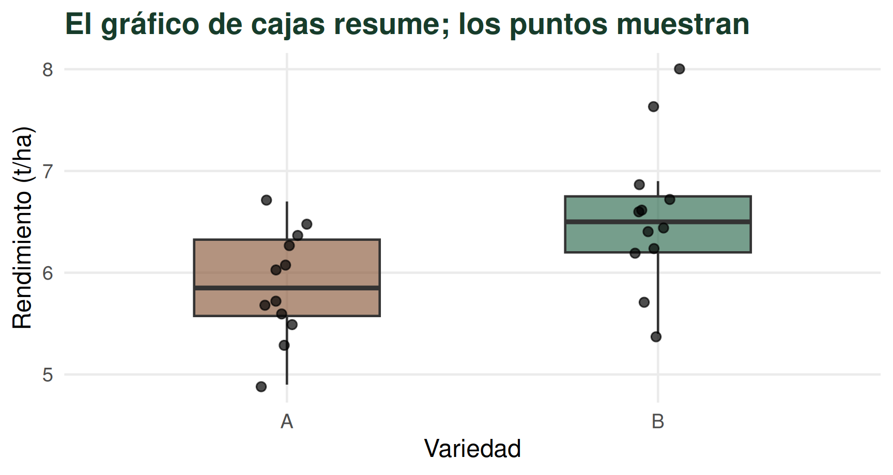
Volveremos a este gráfico después de conocer la mediana y los cuartiles.
Otra síntesis: media + una medida de dispersión
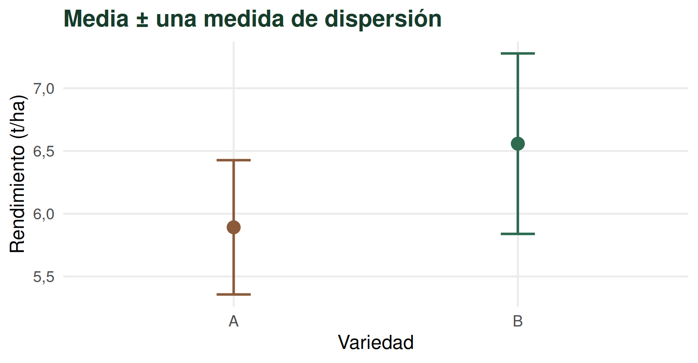
Las barras de error pueden representar cosas diferentes. Siempre debemos indicar qué representan.
Por ejemplo: DE, EE o IC.
Relación entre 2 variables cuantitativas
¿La materia orgánica se relaciona con el rendimiento?
En la matriz, materia orgánica y rendimiento son variables cuantitativas.
Ahora no nos interesa distinguir las variedades.
¿Cómo podemos ver si ambas variables cambian juntas en cada parcela?
Cada parcela aporta un par: (materia orgánica, rendimiento).
Un punto por parcela revela la relación
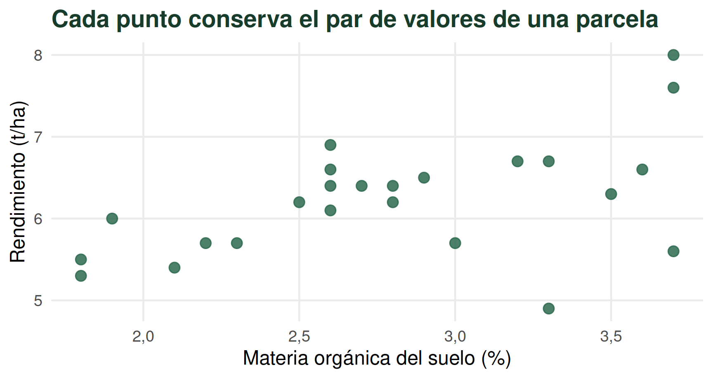
Una asociación observada no demuestra por sí sola causalidad.
Orientación, no receta
| Variables | Herramientas que pueden ayudar |
|---|---|
| 1 categórica | frecuencias, proporciones, barras |
| 2 categóricas | tabla de contingencia |
| 1 cuantitativa | distribución, histograma |
| cuantitativa + categórica | puntos por grupo, gráfico de cajas, media + dispersión |
| 2 cuantitativas | diagrama de dispersión |
El gráfico depende de las variables y de la pregunta que queremos responder.
Medidas de resumen
¿Cómo resumimos cuantitativamente lo que vemos?
Si pudieran describir los 24 rendimientos con un solo valor, ¿cuál elegirían?
Reducir datos implica elegir qué información conservar. Una respuesta posible es la media.
La media busca un punto de equilibrio
Sumamos los valores y repartimos el total en partes iguales.
\[\bar{x}=\frac{\sum_{i=1}^{n}x_i}{n}\]
Media = 6,22 t/ha
Otra opción: ¿la parcela del medio?
La mediana busca la posición central
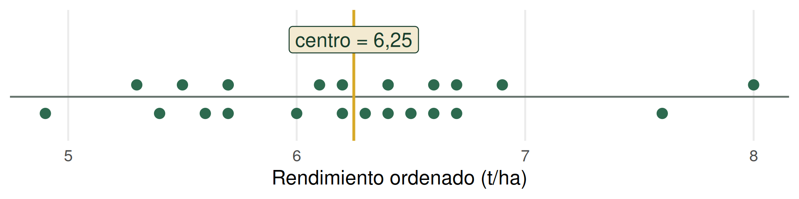
- Ordenar los datos.
- Encontrar la posición central.
- Dejar la mitad de las observaciones a cada lado.
La mediana es el percentil 50.
Mediana = 6,25 t/ha
¿Media o mediana? Ejemplo con diámetro de árboles
Primero, un caso sin valores extremos
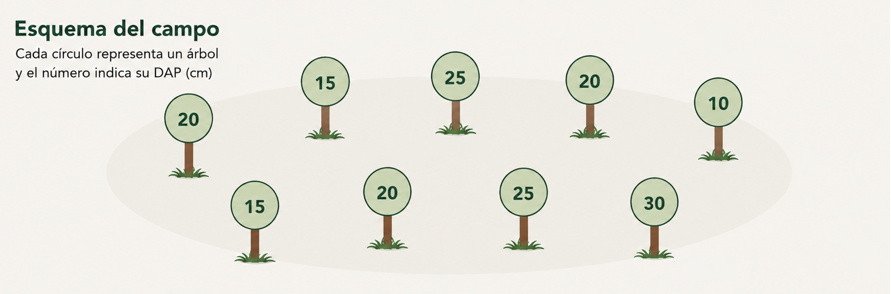
Ahora, un caso real: apareció un palo borracho
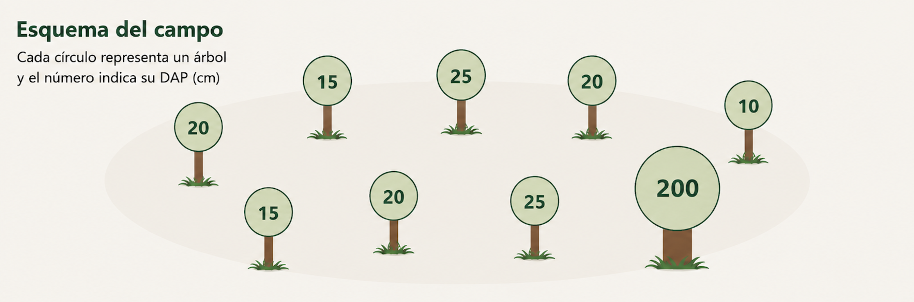
¿Media o mediana?
¿Cuál describe mejor la tendencia central del DAP de estos árboles?
La mediana sigue siendo 20 cm, mientras que la media pasó de 20 cm a 38,9 cm.
La media es sensible a valores extremos en un lado de la distrubución; la mediana es mucho más resistente a ellos.
Media y mediana responden de manera distinta
- La media usa todos los valores y es sensible a valores raros o atípicos en un extremo de la distribución.
- La mediana depende del orden y es más resistente.
- La forma de la distribución ayuda a decidir qué resumen es útil.
La moda es el valor más frecuente
Puede ser útil, especialmente en variables categóricas.
Puede haber una moda, varias o ninguna claramente dominante.
Tres medidas de tendencia central
| MEDIA | MEDIANA | MODA |
|---|---|---|
| equilibrio de los valores | posición central | valor más frecuente |
Las tres son medidas de tendencia central: intentan resumir dónde tienden a concentrarse los datos.
Los cuartiles dividen los datos ordenados
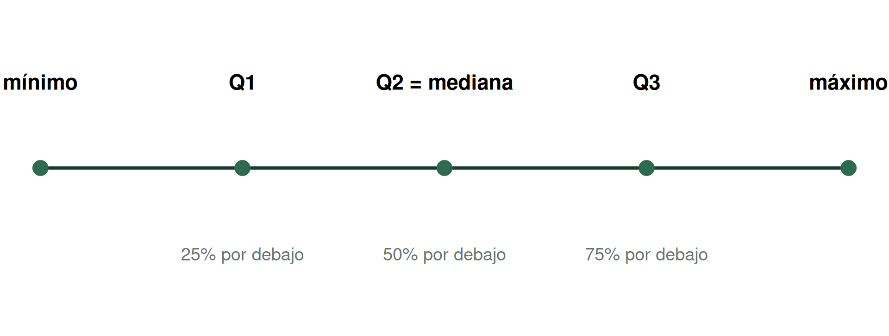
Ahora podemos leer el gráfico de cajas
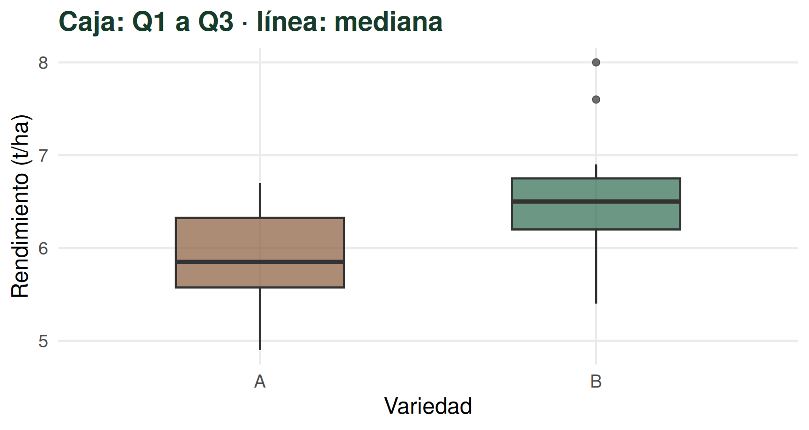
IQR = Q3 − Q1: el ancho de la mitad central de los datos.
El boxplot también sugiere la forma de la distribución
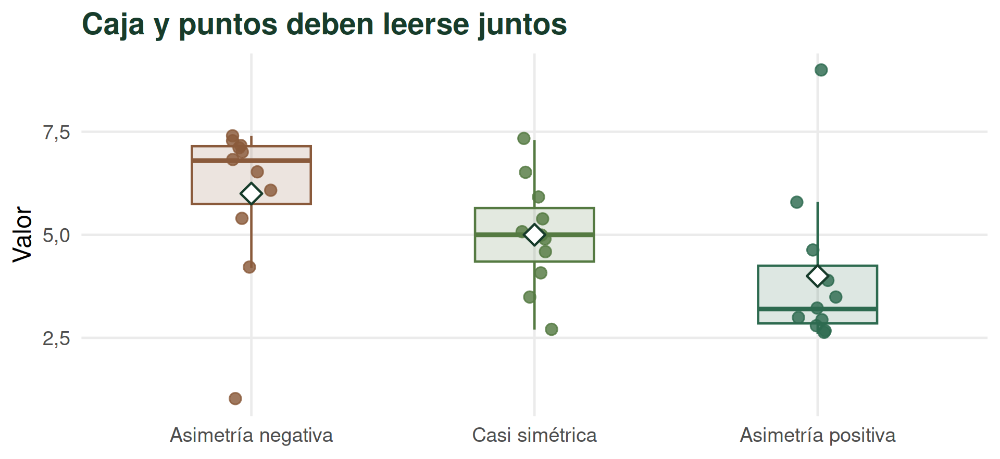
La posición de la mediana, el largo relativo de ambos lados y los puntos ayudan a reconocer asimetrías.
Misma media, pero…
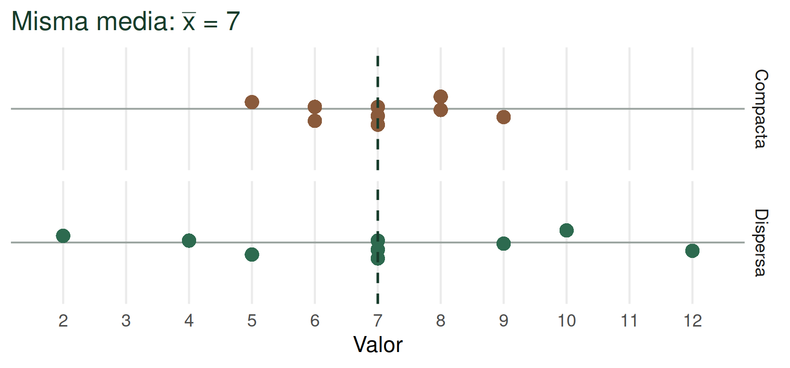
Tienen la misma media, pero ¿son series equivalentes? ¿En qué se diferencian?
El rango usa los dos extremos
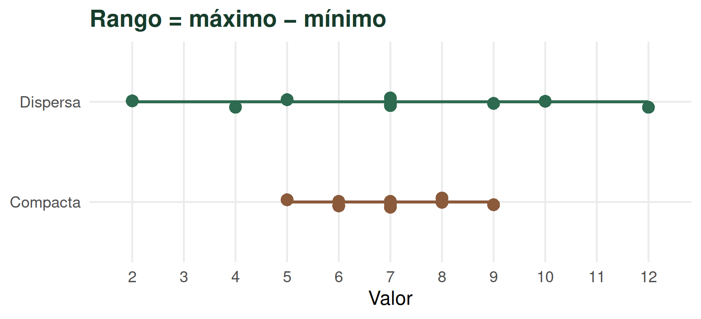
Es fácil de interpretar, pero ignora todas las observaciones intermedias.
El IQR mira la mitad central
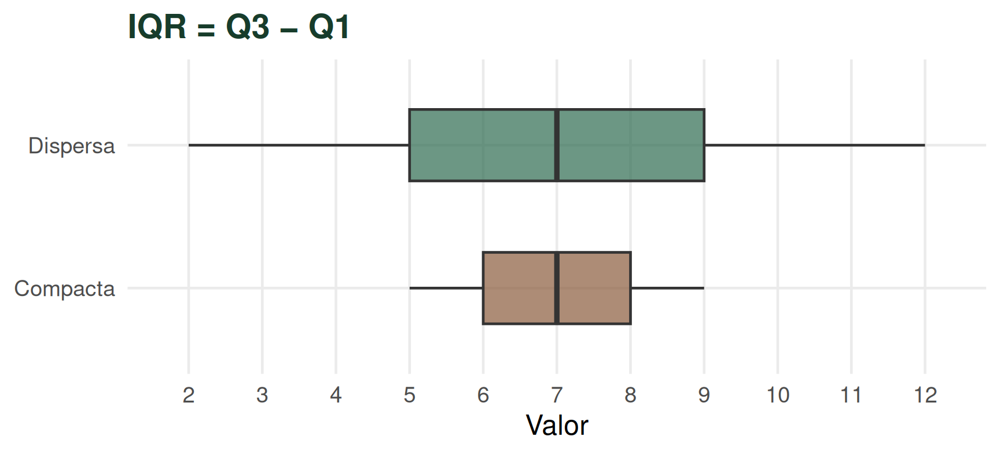
El IQR es la longitud de la caja del gráfico de cajas.
Las distancias respecto de la media tienen signo
Para \(x=\{2,4,6\}\), la media es 4.
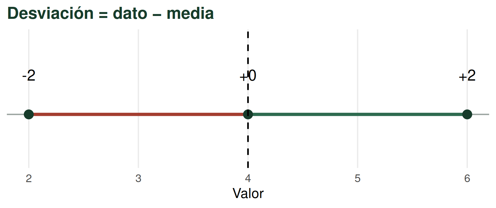
Las desviaciones con signo suman 0: se cancelan.
¿Cómo evitamos que se cancelen?
¿Qué operación permitiría que las desviaciones negativas no cancelen a las positivas?
Elevarlas al cuadrado: así todas contribuyen con valores positivos.
Así construimos otra medida de dispersión o variabilidad
- Calculamos cada desviación respecto de la media.
- Elevamos cada desviación al cuadrado.
- Sumamos los cuadrados.
- Sumamos las desviaciones cuadráticas.
Si una serie tiene más datos, tendrá más términos en la suma. Para expresar una variabilidad promedio, necesitamos dividir esa suma por una cantidad relacionada con el número de observaciones.
En la varianza muestral dividimos por \(n-1\):
\[s^2=\frac{\sum_{i=1}^{n}(x_i-\bar{x})^2}{n-1}\]
Su unidad queda al cuadrado.
La varianza deja un problema: la unidad al cuadrado
Si el rendimiento está en t/ha, la varianza queda en \((\text{t/ha})^2\).
¿Qué operación nos permite volver a la unidad original?
\[s=\sqrt{s^2}\]
Esta es la desviación estándar: vuelve a expresarse en t/ha.
A: 0,54 t/ha
B: 0,72 t/ha
El CV expresa variabilidad relativa
\[CV=\frac{s}{\bar{x}}\times 100\]
A: 9,1%
B: 11,0%
El CV expresa la desviación estándar en relación con la media, en porcentaje.
¿Qué significaría un CV de 50 %, de 100 % o de 200 %?
Todas describen cuánto varían los datos
Rango, IQR, varianza, desviación estándar y CV son medidas de dispersión o variabilidad.
El CV es relativo a la media. Las demás expresan variabilidad absoluta.
Tendencia central y dispersión deben conversar
| MEDIA + DE | MEDIANA + IQR |
|---|---|
| Promedio y variación alrededor de él | Resumen resistente de la tendencia central y de la mitad central |
Son elecciones razonadas, no una regla automática.
¿Qué aprendimos de nuestros datos?
Volvamos a la decisión agronómica
La pregunta inicial, otra vez
¿Qué variedad de maíz me conviene sembrar en mi campo?
Ahora preguntaríamos:
- ¿qué significa “conviene”?
- ¿qué variables medimos?
- ¿cómo obtuvimos los datos?
- ¿cuántas unidades observamos?
- ¿cómo se distribuyen y cuánto varían?
Primero miremos cada parcela
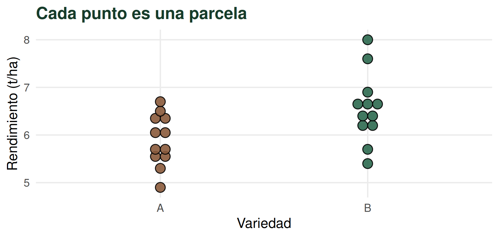
¿Qué pueden decir de estas variedades mirando los datos?
Otra mirada: la distribución de cada variedad
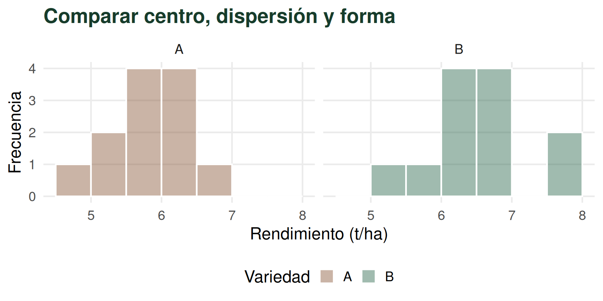
Las marcas sobre el eje representan las parcelas observadas.
Después de mirar, calculamos medidas de resumen
| Variedad | n | Media (t/ha) | DE (t/ha) | Mediana (t/ha) | IQR (t/ha) |
|---|---|---|---|---|---|
| A | 12 | 5,89 | 0,54 | 5,85 | 0,75 |
| B | 12 | 6,56 | 0,72 | 6,50 | 0,55 |
Primero mirar; después elegir un resumen que conserve la información relevante.
Puntos, caja, media y desviación estándar
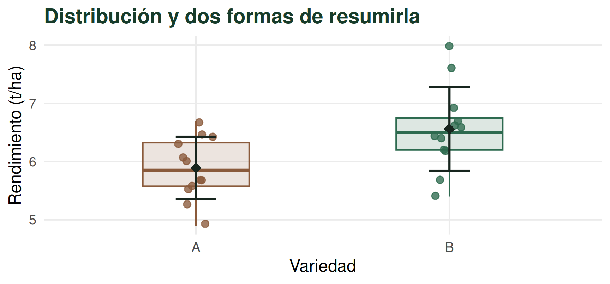
Caja: mediana y cuartiles · rombo y barra negra: media ± DE · puntos: parcelas
¿Cómo escribimos la interpretación?
1. ¿Qué tal así?
“La variedad B rindió más que la A.”
¿Es suficiente?
2. ¿Y ahora?
“A rindió en promedio 5,89 y B 6,56 t/ha.”
Mejor, pero…: informa la tendencia central, pero oculta la variabilidad.
3. Una descripción más completa
Con 12 parcelas por variedad, la variedad A tuvo un rendimiento promedio de 5,89 t/ha (DE = 0,54), mientras que la variedad B tuvo un rendimiento promedio de 6,56 t/ha (DE = 0,72).
Una medida de tendencia central debería acompañarse de una medida de dispersión.
Todavía nos faltan herramientas para llegar a una conclusión completa
DESCRIBIR NO ES INFERIR
En nuestros datos, B presentó mayor rendimiento promedio.
Si 6,56 es mayor que 5,89, ¿por qué todavía no podemos afirmar que B rinde más en general?
Porque solo describimos estas 12 parcelas por variedad, bajo estas condiciones. Generalizar más allá de estos datos requiere otra herramienta: la inferencia estadística (además de un diseño adecuado).
El diseño vuelve a ser central
¿Qué pasaría si todas las parcelas A estuvieran de un lado del campo y todas las B del otro?
Un análisis sofisticado no puede corregir un diseño incapaz de responder la pregunta.
Una diferencia espacial puede confundirse con la variedad
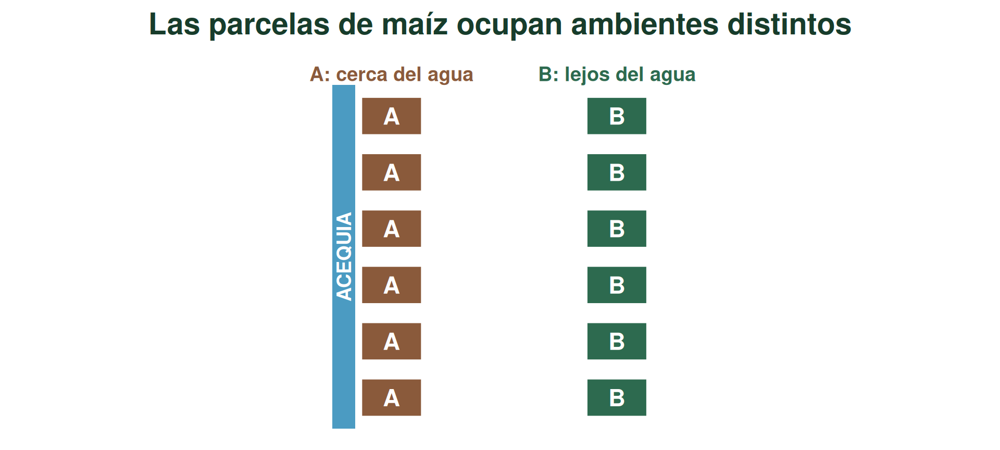
Si A rinde distinto, ¿se debe a la variedad o a su cercanía a la acequia?
El camino completo
PREGUNTA
↓
DISEÑO
↓
DATOS
↓
DESCRIPCIÓN
↓
INFERENCIA
↓
CONCLUSIÓN / DECISIÓN
Para llevarse de esta clase
- Primero preguntamos.
- Después obtenemos datos adecuados.
- Antes de analizarlos, los miramos.
- Resumir implica elegir qué información conservar.
Una decisión confiable empieza mucho antes del cálculo.
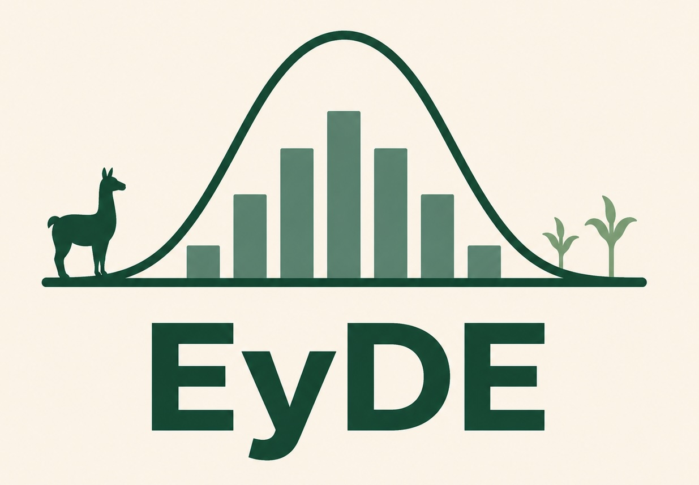
Andrés Tálamo - Estadística y Diseño Experimental - UNSa